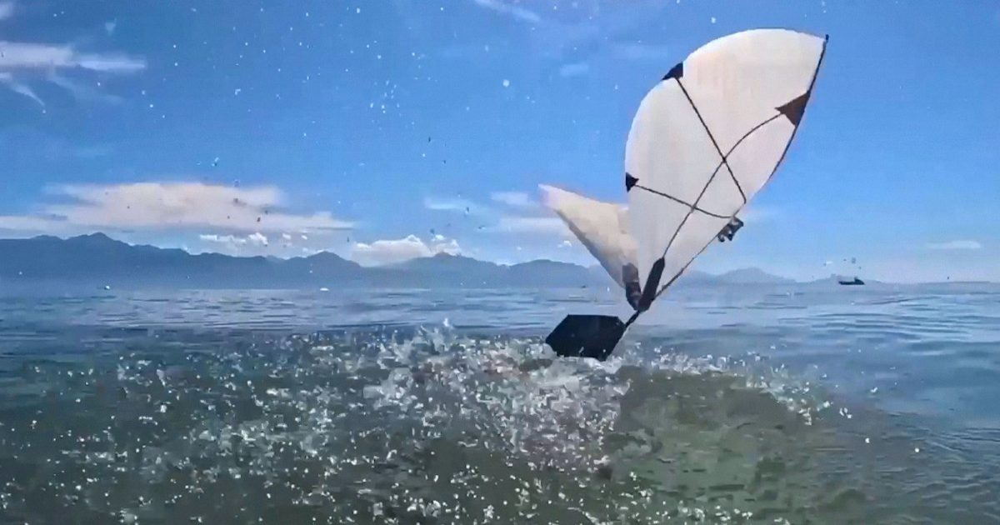

Это птица, это самолет ... это роботизированный тупик?
Учитывая, что вода в 1000 раз плотнее воздуха, перемещение по этим двум средам требует совершенно другой механики - или так можно предположить.
Тем не менее, такие птицы, как чайки и тупики, могут погружаться в море, плавать под водой и прыгать обратно в воздух, чтобы улететь.
И теперь инженеры МАССАЧУСЕТСКОГО ТЕХНОЛОГИЧЕСКОГО ИНСТИТУТА и EPFL в Лозанне, Швейцария,...